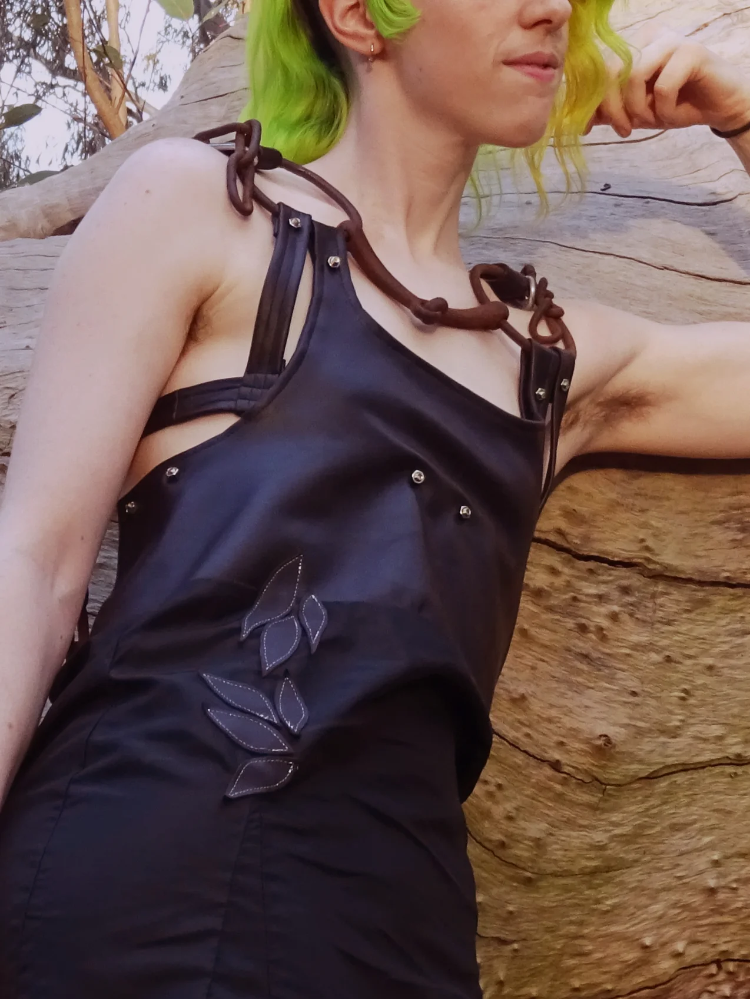
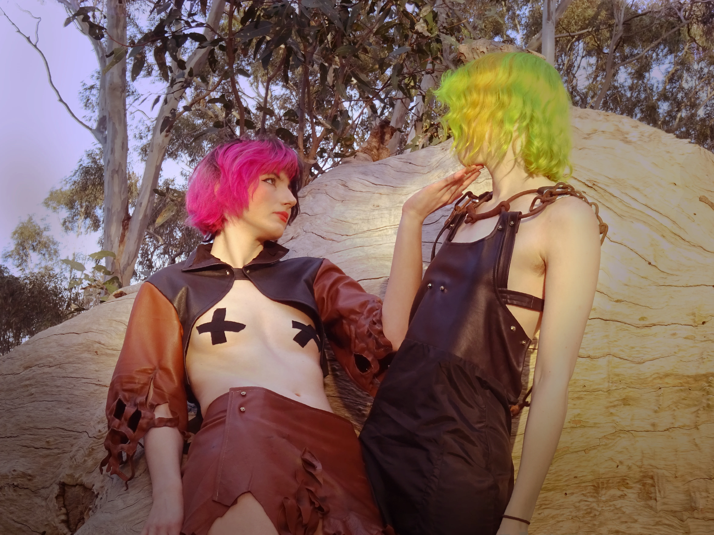

Freight Train to Faerie examines the tensions and harmonies between femme and butch, faeries and iron. These things may lay in opposition, but they also lay together...
The collection draws on leatherdyke subculture and metalsmith workwear combined with fairy mythos and magic. This resolves into pieces which are materially grounded, but expressing a certain 'flight of fancy'. The pieces are playful and light, erotic and heavy – capricious as the fey.
Despite protective leather shielding or guarded high collars, each look incorporates softer suggestions of nature and wonder, localised with gumleaf forms and burning techniques. The dressing process is ritualised through the patient use of nickel bolts as fixings. In doing so, industrial artefacts are recontextualised as conductors of magic.
Starring and photographed by Bri Crick and Rebecca Jordan. This photoshoot took place in Banyule, on Wurundjeri land.

